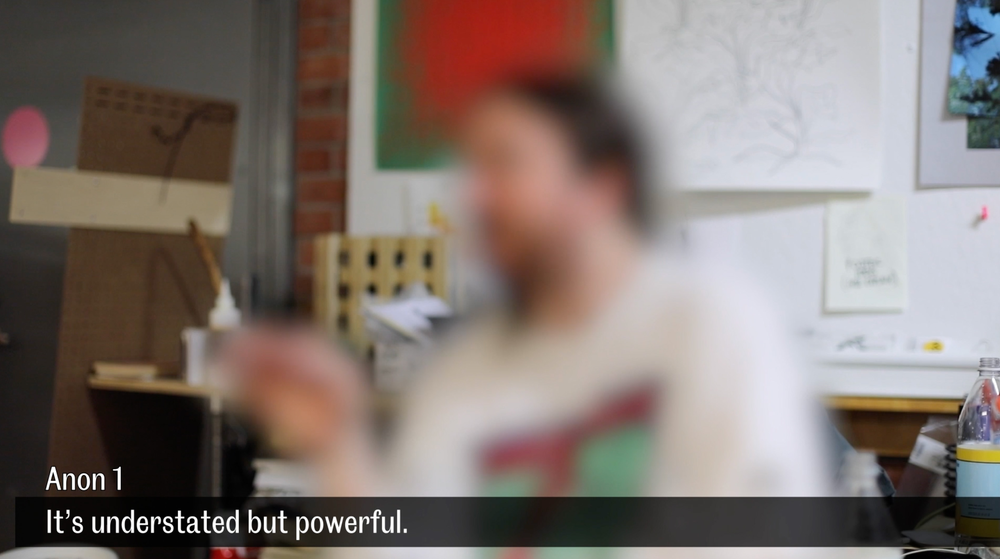
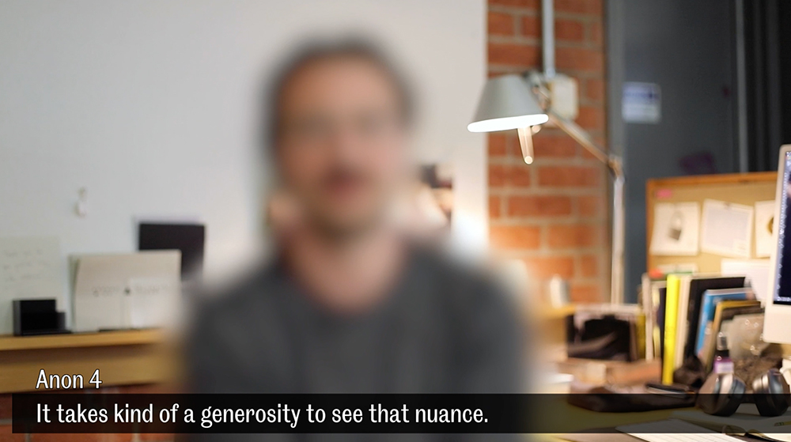
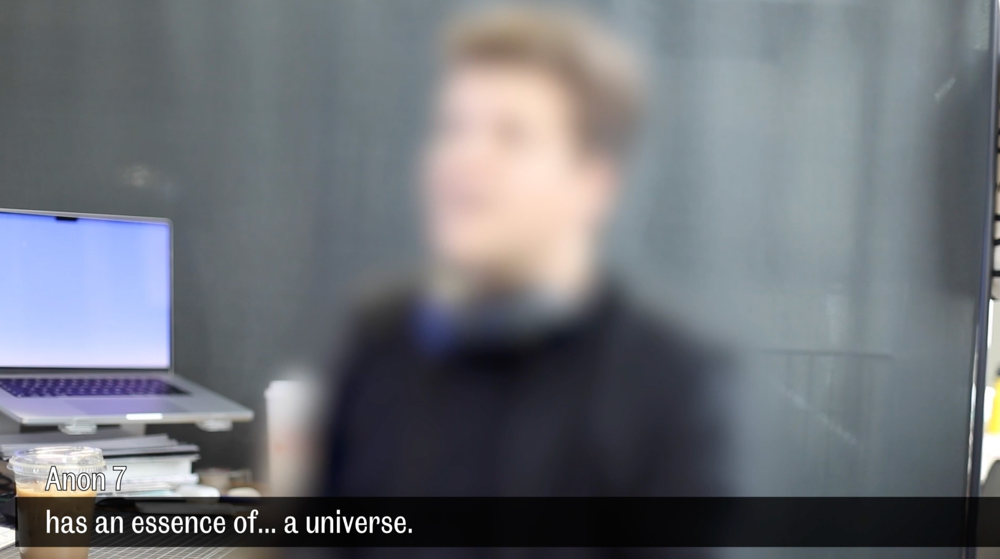
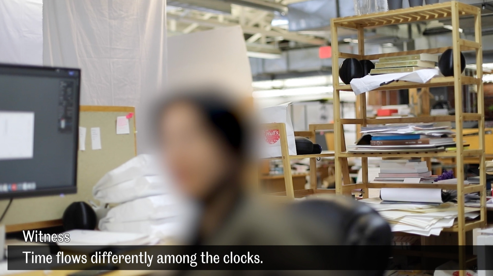
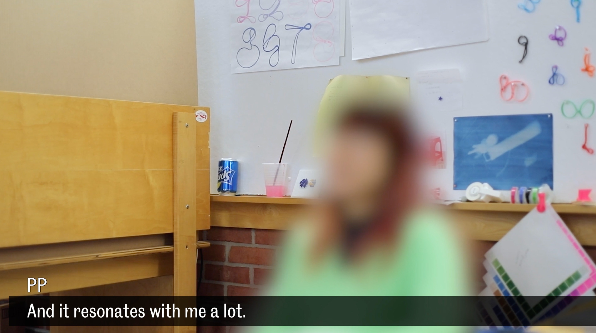
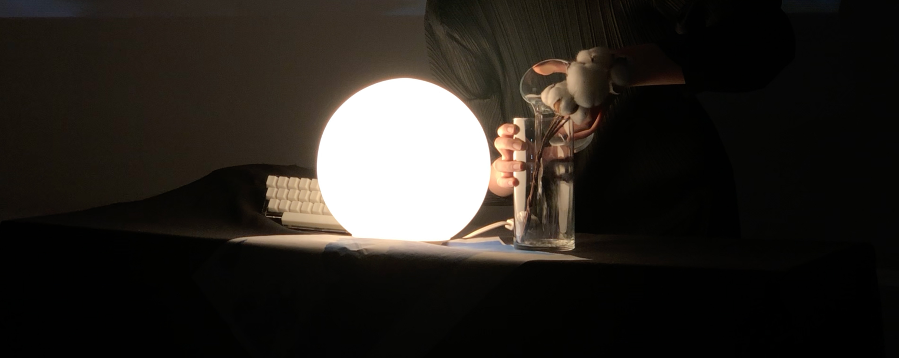
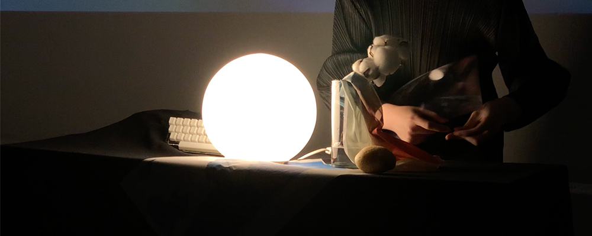
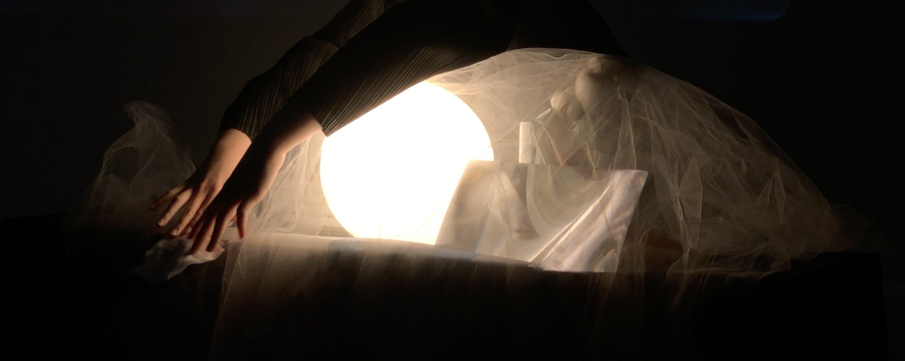

She did an interview asking people to describe her work using a word, a
project, and an object for her public presentation as her last project
here in school. She was imagining it to be a funny video at first, but
how sincere the answers she got greatly exceeded her expectation, which
she felt very grateful.
She put together all the objects
people mentioned on a desk like a still life. It was how her work looked
like.